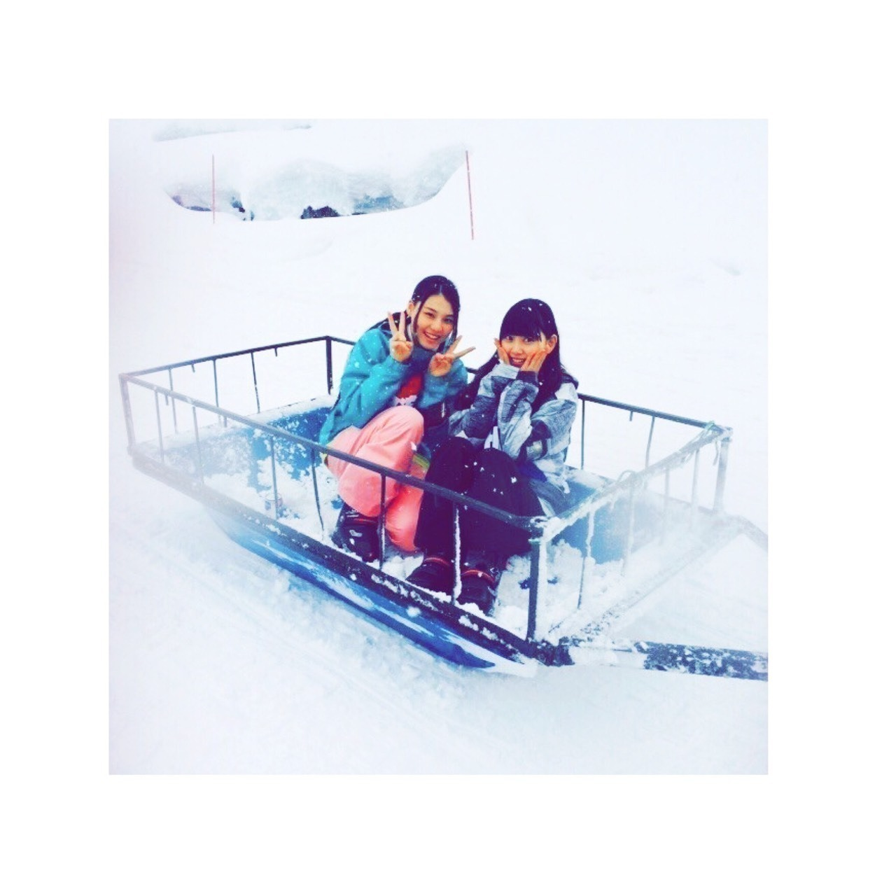
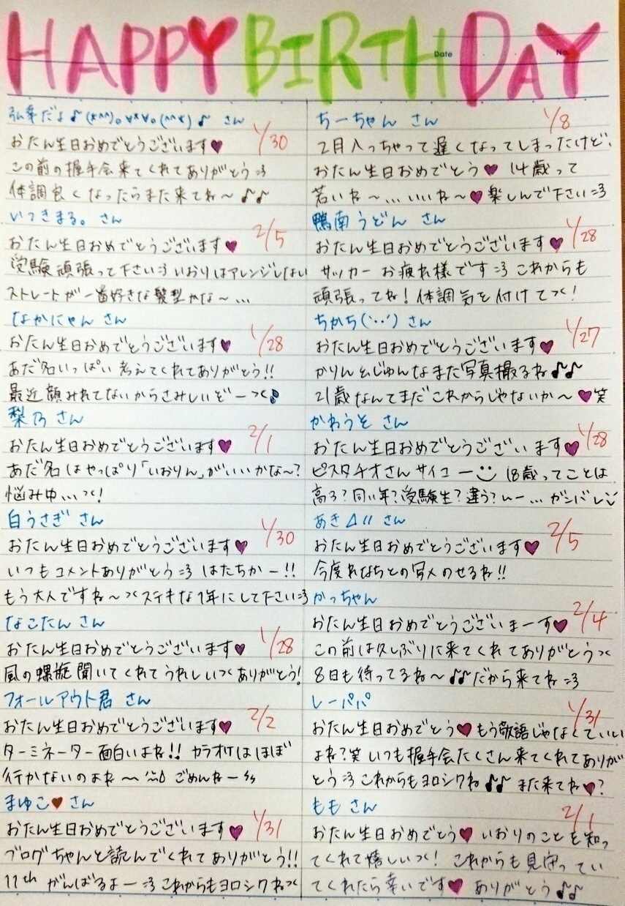
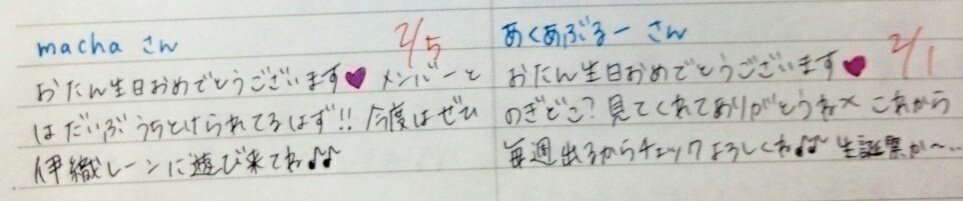
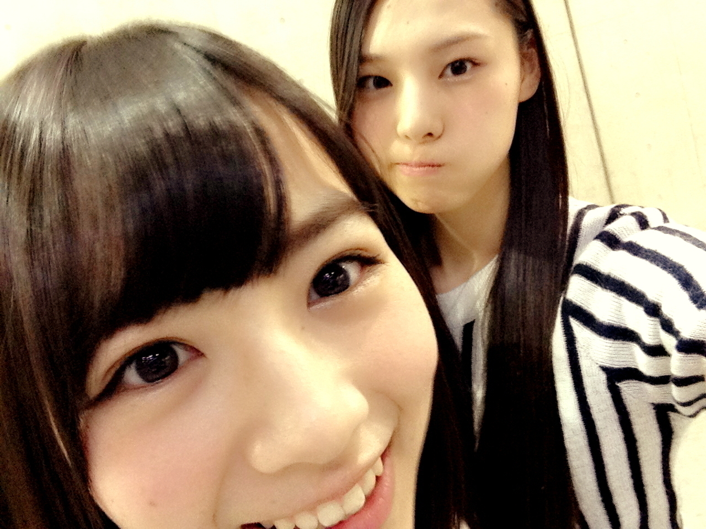
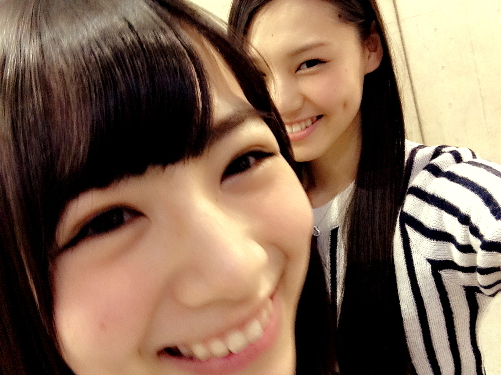
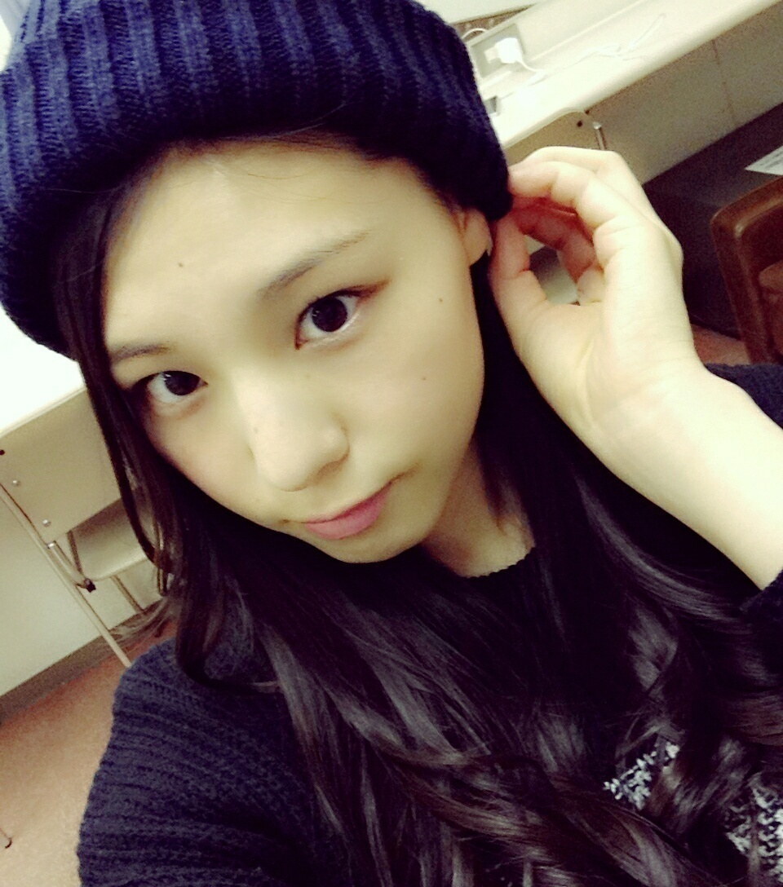

| 2015/02 06 Fri | 5億年後も2015年だったら_(． ．*)vol.5 |
みなさんこんばんはー！
さがらいおりです！
乃木どこスキーロケ

カラオケ、、
七瀬さん、深川さんと歌いました！
いおりは普段行きませんので( ¯−¯ )
練習すれば歌えるし、、( ¯−¯ )はは
選曲は 3 人で決めました！
真夏さん可愛かったー♡
♡ずっきゅん♡
後半も見てね～
~いおり庵~
 お笑いはいつから好きなの？
お笑いはいつから好きなの？
劇場に通い始めたのは
高 1 の後半だから
割と最近！
でもショーレースとか特番は
昔から欠かさず見てた！
いおりって呼び捨てで呼んでもいい？
いいよ♡
むしろ呼び捨てのが嬉しい
いおりって響き結構気に入ってるし
最近、先輩も
いおりちゃんじゃなくて
いおりって呼んでくれるようになって
ひそかにニヤけてるんだ〜(。-∀-)♡
この際、ショートにしてみては？
いや、いいよ
いおりちゃんはいつから前髪伸ばしてるの？
高 1 の時に一回切って
それから切らずに伸ばしてるから、
1 年くらい？かな
でも小中でも作ったり伸ばしたりしてたよ！
お誕生日の方にメッセージ(´,,•ω•,,)♡


2 / 3 節分
この日は仕事で夜遅くなっちゃったんだけど、
帰ってからママとパパとひまちゃんで
｢鬼は外 福は内｣した！
ひまちゃん襲ってやるーってやろうとしたら
案の定やられました┏( .-. ┏ ) ┓
ぼやけた、、
R-1グランプリ！！！！！
2 / 10 だよー(^▽^)o！！
やったーー(^▽^)o
パラダイスさんは準決で
敗退しちゃったけど、、（ ; ; ）
敗者復活枠に来て欲しいーーーー
ノンスタ石田さんとアジアン馬場園さんいるし、
あと、
エハラさんとあばれる君(さん)もいるし、
とにかく明るい安村さんも楽しみ(っ `-´ c)♡‼
やまもとまさみさん
連覇目指して頑張って欲しい！


きゃーーーー♡
かーわーいーいー♡
ひーなーこー♡
ガキ使のブルーレイ全 11 巻
少しずつ集めたい
あと
｢たりふた｣も！
みる時間あったら買いに行こう♡
2 / 10 MARQEE
西野さんと一緒に撮っていただきました！
ぜひ見てください：）
あと、あだ名は
一応｢いおりん｣にします！
でも今まで呼んでたように
呼んでくれても全然OKです(*´`*)

明日、あさっての
握手会来てくれる方
楽しみに待ってます♪♪
明日は 3 4 5 部だから
1 2 部に来てもいないからね！！
5 億年後も2015年だったらどうする？
i o r i .

コメント(426)
2015/02/06 22:54